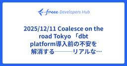
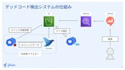
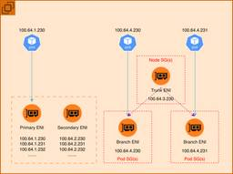

freee Developers Hub
https://developers.freee.co.jp/
フリー株式会社の開発者（エンジニア, デザイナー,プロダクトマネージャー, etc...）によるブログです
フィード
Lean Six Sigma: Testing Software and Cooking a Masterpiece
freee Developers Hub
Hello. I’m Jane , a QA engineer working with multiple QA engineers covering various products, mainly focused on Human Resources. This is the thirteenth day of freee QA Advent Calendar 2025. Thanks to a movie night with my little one, I found my topic. Introduction Think back to the great Chef Gustea…
15時間前
スターの多いOSSは、どのようなAGENTS.mdを記述しているのか調べてみました 2
2
freee Developers Hub
はじめに この記事は、freee Developers Advent Calendar 2025 の 13日目の記事です。 今回は freee支出管理 を開発しているシバタがAGENTS.md(CLAUDE.md)に関しての記事を書きます。 弊社でも各々の開発しているサービスのリポジトリでCLAUDE.mdやAGENTS.mdを書いてます。 担当しているプロダクトを開発する際、Agentに事前に知ってほしい内容をどこまで書くべきか私自身悩むことがあり、一度会社のコンテキストから離れ、OSSではどのような内容が書かれているのか調査してみました。 調査結果 スターが多く、日頃開発者がお世話になって…
15時間前

2025/12/11 Coalesce on the road Tokyo 「dbt platform導入前の不安を解消する───リアルな一ヶ月検証記」登壇資料
freee Developers Hub
2025年12月11日に行われた、 Coalesce on the road Tokyoでの登壇資料です。 speakerdeck.com
1日前
新卒QAエンジニアの育成を振り返って
freee Developers Hub
こんにちは。人事労務でQAエンジニアをしているsaeです。 freee QA Advent Calendar2025 の12日目を担当します。 この記事では、自身が携わった新卒育成(QA)についてこの一年で考えてきたことをお届けします。 この記事をおすすめしたい人 QAエンジニアの育成に悩んでいるマネージャー・リーダーの方 QAエンジニアのスキル獲得に悩んでいる/迷っているJr.QAの方 成長環境を求めてQAエンジニアを目指している学生の方 1. 私の新卒育成の考え方 肩肘張らずに成果を出せる状態を目指し、大前提としてチーム"一丸"で働ける状態を目指しました。 まずは一緒に働く人を知り、仲良く…
2日前

巨大Ruby on Railsサービスで安全かつ効率的にデッドコードを消す技術 90
freee Developers Hub
この記事は、freee Developers Advent Calendar 2025 の 12日目の記事です。 こんにちは。freeeでエンジニアをしている高田と申します。普段はエンジニア横断組織で共通基盤・社内用共通ライブラリを開発したり、プロダクトの開発支援などを行っています。趣味はお散歩です。 今回は、サービス開始から丸12年が経過して複雑になったRuby on Rails製サービスで、安全かつ効率的にデッドコードを消せるようにするために行ったことをお話します。 3行サマリ デッドコードを検出するためにcoverband gemを入れようとしたものの、入れたいサービスの規模が大きすぎて…
2日前
「君らはAIネイティブ世代だから」と背中を押された新卒が、AIモブプロでチームのAI活用の促進に取り組んだ話 8
freee Developers Hub
この記事は、freee Developers Advent Calendar 2025 の 11日目の記事です。 はじめに こんにちは！freee人事労務アウトソースのチームでエンジニアをしている25卒のatoringoです！ みなさんのチームでは、生成AIを開発にどれくらい活用できていますか？ 日々、試行錯誤されていると思います。 私の所属するチームは事業統合で弊社にジョインしたプロダクトで、技術スタックや開発フローなどで弊社の標準と違う箇所が多く、AI活用は進んでいるとは言えない状況でした。 今日は、配属直後の私が「AIモブプロ会」を主催し、そこから「週2時間のAI探索タイム」という制度が…
2日前
新卒で配属されたSEQからアプリケーションエンジニアに異動して1年経ったので振り返ってみる
freee Developers Hub
こんにちは。freee人事労務でアプリケーションエンジニアをしているyellowです。 この記事はfreee QA Advent Calendar 2025の11日目の記事です。 新卒でfreeeに入社し、研修期間を経て始めに配属されたSEQ(Software Engineering in Quality)チームから、freee独自の異動戦国制度を利用してアプリケーションエンジニアに異動して1年が経ったので、この節目の機会に個人的な振り返りをしたいと思います！ 異動戦国制度とは 異動戦国制度とは、1年に1回自分の希望するチームに異動の立候補をすることができる社内異動制度です。 freee のエ…
3日前
Performance Testing 101: The Importance of Performance Testing
freee Developers Hub
Hello, I'm Son. QA Engineer from Healthcare. Today is the 10th day of freee QA Advent Calendar 2025. I am grateful for this opportunity to write an article for this event and excited to share my experience about performance testing and its tool. Self Introduction and Background I have been a QA sinc…
4日前

Security Group for Pods 詳解 2
freee Developers Hub
この記事は freee Developers Advent Calendar 2025 12/10(10日目) の記事となります。 adventar.org 昨日は kochan さんの AIを使って雑にアプリを作る企画の振り返り でした。 対話形式のアドベンドカレンダー新鮮でした。自分が AI で日々感じてることも話されていてとても共感できる内容でした。 個人的には him0 さんの「AIに全部任せると爆速でできて爆速で腐るよな。」表現が秀逸で面白かったです。 本日は SRE チームの sho が書きます。freee ではプロダクトの共通基盤である EKS クラスタを刷新するプロジェクトを担…
4日前
AIを使って雑にアプリを作る企画の振り返り 36
freee Developers Hub
こんにちは。この記事は freee Developers Advent Calendar 2025 12/09(9日目) の記事です。 adventar.org 今日は請求書チームでエンジニアをしているkochanが書きます。 夏に企画した 真夏の自由研究〜AIを使って雑にアプリを作ろう！〜 - freee Developers Hub の振り返り記事を書こうと思っていたらいつの間にか年末になっていたので、これを機に供養させていただければと思います。 「 真夏の自由研究〜AIを使って雑にアプリを作ろう！」の企画では10日間に渡ってAIを利用して雑なアプリを作らせた経験を連載記事にしました。 こ…
5日前
AIよりも手戻りに効く、たったひとつの冴えたやりかた 3
freee Developers Hub
こんにちは。freeeの課金基盤チームでQAエンジニアをしているkairiです。 この記事は freee QA Advent Calendar2025 の9日目です。 ここ数年AIの登場によって様々なことが本当に便利になりました。私自身2年以上プライベートでChatGPTに課金しているヘビーユーザーですし、業務においても日常的にGeminiやNotebookLM、askDevin、Roo CodeといったAIツールをフル活用しています。 いま、どこの企業でも開発やテストの現場でAIによる効率化が急速に進んでいることでしょう。一方で、AIが出した「正しそうな答え」をそのまま採用して、後から「あれ…
5日前
バイブコーディング開発のプロンプトはどこまで雑でも大丈夫なのか？ 3
freee Developers Hub
AIエージェントを駆使してアルバムアプリを開発！AI時代におけるエンジニアの役割と、初心者が直面する課題、求められるスキルを徹底考察。
6日前
開発ほぼ未経験の状態から新卒QAエンジニアになってみた 1
freee Developers Hub
こんにちは。freee人事労務でQAエンジニアをしているmaomaoです。 freee QA Advent Calendar2025 8日目です。 はじめに 私は昨年に続き、freee2代目の新卒QAエンジニアです！開発ほぼ未経験の状態から新卒でQAエンジニアをやっています！ 私のように開発経験のない状態からQAエンジニアを目指している人、新社会人になることに不安を感じてる人に少しでも参考になればいいなと思い、記事を書かせてもらいました！ なぜ新卒でfreeeのQAエンジニアを選んだのか freeeの選考を受けるまでQAエンジニアという職種を知らなかったのですが、freeeのQAサマーインター…
6日前
『もし、あの時知っていたら…』を無くしたい。Gemini Gemと勉強会で築く、チームの「確かな知識」 1
freee Developers Hub
こんにちは。freee販売とfreee工数管理のQAエンジニアをしている tomi です。 freee QA Advent Calendar2025 7日目です。 この記事では、障害の振り返りから生まれたチームの新しい取り組みについてご紹介します。 知識をすぐに活かせる状態へ 「この仕様って、結局どうなってたんだっけ？」 「あの時〇〇さんに聞いたあの仕様、どこにメモしたかな…」 私たちQAエンジニアにとって、プロダクトの最新知識は、質の高いテスト設計に欠かせません。 障害の振り返りから始まった勉強会も、同期的に1回のみ、あるいは録画したとしても動画の中に留まったままだと、後から必要な時に探すの…
7日前
「私たちのログ配送、コストかかりすぎ？」fluentdのログ配送に関するコスト削減に取り組んだお話 98
freee Developers Hub
はじめに こんにちは！freee のPlatform Engineerをやっているyamaです。 私の所属するCloudGovernance（CGov）チームでは主にAWS関連の権限やコストの統制・可視化・最適化などを行っています。 私は主にコスト統制をメインに担当しています。 この記事はfreee Advent Calendar 2025の7日目になります！ 今回はfreeeにおけるコスト最適化において大きな成果のあった、「fluentdのログ配送に関するコスト削減」についてご紹介いたします。 背景 CGovチームではAWSのコスト可視化・最適化を進めており、AWSのコストを定期的に確認して…
7日前

新卒QAとして1年間やってみたことと見えてきた目標
freee Developers Hub
こんにちは、BaaS（freee振込）でQAエンジニアをしているG2です。freee QA Advent Calendar2025 6日目です。 この1年間で新卒QAとして取り組んできた具体的な業務内容や、今後の目標として定まりつつある「なりたいQAエンジニア像」についてお話しします。 新卒QAのあるある freeeに限らず、新卒でQAエンジニアというのは珍しいようで、社外のワークショップなどに参加すると、よく「なぜ新卒でQAに？」と聞かれます。社外の新卒QAの方にも共感してもらえたので「あるある」と言ってもいいはず... 私は大学在学中に会計アプリ開発のアルバイトをしており、エンジニアとして…
8日前

突撃！隣のリモート・オフィス環境 2025 180
freee Developers Hub
債権・請求書ドメインでエンジニアをやっている jaxx です。今年もアドベントカレンダーの季節がやってきましたね。freee Developers Advent Calendar 2025 の 6 日目の記事となります。 2年ぶりに「突撃！隣のリモート・オフィス環境」を書きたいと思います。前回同様 developers 全体に周知して書いてくれる方を募集しました。猛者揃い(?)だと思うので、こだわりのリモート・オフィス環境について紹介していきたいなと思います。 developers.freee.co.jp 3度目のスマートホームな環境（jaxx） スマートホームのダッシュボードを作りました 気…
8日前

【AI-Lab】銀行取引明細の自動分類の改善
freee Developers Hub
こんにちは！freeeのAI-Labで機械学習エンジニアをしているringoです！ freeeのAI-LabはML (Machine Learning、機械学習)やそれに類するテクノロジーを駆使してfreeeユーザーに新たな価値を届けるべく、MLの専門性を持った愉快なメンバーが日々楽しく研究開発しております！ AI-Labではほぼ毎週F4R (Freee time for Research)という勉強会をチーム内で開催しており、各メンバー持ち回りで自分の興味のあるテーマについて深掘り、チームに共有しています。せっかくなので勉強会の内容を対外的にも発信してみようということになり、今回その第一弾と…
8日前
AI開発マニア
freee Developers Hub
AIツールを活用した開発生産性の向上を目指すfreeeの新制度「AI開発マニア」の概要と、その認定基準、導入後の反響について詳しく紹介。チーム全体でのAI活用に向けた次のステップも提示。
9日前
上流工程から関わる前のめりQA活動
freee Developers Hub
こんにちは。支出管理プロダクトQAのsunnyです。 この記事はfreee QA Advent Calendar 2025の5日目の記事です。 本記事では支出管理プロダクトの開発に初期段階から携わり、QAとしてどう関わってきたかについて紹介します。 1. 上流工程から関わるとは どのような取り組みをしてきたか できることから、できるとこまで ユーザーストーリーや機能ごとの読み合わせ会 2. 培った知識の集積と相互レビュー 3. 上流工程から関わることによるメリット 4. まとめ 1. 上流工程から関わるとは どういうプロダクトにしたいか、プロダクトが提供する価値をどのようにして届けるか？の段階…
9日前
Vectorの魅力を語る！ログ収集ツールとしての可能性について
freee Developers Hub
Vectorのロゴ vector.devより引用 こんにちは！ SREのzakiです。この記事は、freee Developers Advent Calendar 2025 の 4日目の記事です。 はじめに Vectorの検証を始めた動機 Vectorの使い方速習 基本コンセプト 動かし方 Vectorの良さ 設定ファイルをテストできる エラーメッセージが非常に分かりやすい メモリ使用量が少ない 開発が活発 (懸念点) しかしながら。。 最後に はじめに Vectorという名前のツールはいろいろ存在しますが、今回取り上げるのは「ログ収集ツール」のVectorです。Vectorは、もともとTim…
10日前
1年かけてE2Eの実装基盤と実行基盤をリプレイスした話
freee Developers Hub
こんにちは。SEQ (Software Engineering in Quality)のtatsukomです。私たちのチームは、現在自動テストの基盤開発、さらには開発フィードバックサイクルの高速化を目指した開発を進めています。 freee QA Advent Calendar2025 4日目です。 これまで、freeeのE2Eテスト（ブラウザテスト）の実装基盤は、Selenium+RSpec+Capybara+SitePrismをベースにした独自基盤（以下、まとめてSeleniumと表記します）を開発・運用してきました。この基盤で実装されたE2Eテストの実行基盤にはJenkinsを利用していま…
10日前
Agile QA の 1 年をふりかえる
freee Developers Hub
こんにちは、支出管理のプロダクトで QA エンジニアをしている sawa です。 freee QA Advent Calendar 2025 3日目です。 Agile QA について語ります。 The 1st anniversary of Agile QA in freee 私はこれまで、シーケンシャルモデルをメインとするシステム開発で QA として携わってきました。 そんな私が freee に入社して Agile 開発を採用しているプロダクトチームに加わり 1 年が経ちました。 今日はそんな 1 年を振り返りたいと思います。 Sequential QA vs. Agile QA まずは私の経…
11日前
こんにちは！PHPの布教に来ました！
freee Developers Hub
この記事は、freee Developers Advent Calendar 2025 の 3日目の記事です。 はじめに はじめまして！ フリーナンス のエンジニアをしている、the よしだです！ 皆さんPHPはご存知ですか？ フリーではRubyやGoを多く取り扱っていますが、最近フリーにジョインしたフリーナンスではPHPとGoを使用しています。 私自身、PHPカンファレンスのスタッフをするほどPHPを愛しており、フリーであえてPHPの魅力を啓蒙することが私のミッションだと考えています！ 本日はそんな話になります！ PHPは1994年に生まれたプログラミング言語で、Web開発の普及と加速に大き…
11日前
理想の働き方を実現するための、自分だけの快適なリモート・オフィス環境 〜freee QAエンジニア 2025年版〜
freee Developers Hub
freee QAエンジニアの「自分らしい」働き方とは？最高のパフォーマンスを引き出す、快適なデスク環境を公開！
12日前
人生は決断の連続である。故に私は麻雀牌を切った。
freee Developers Hub
こんにちは。この記事は freee Developers Advent Calendar 2025 12/02(2日目) の記事です。 adventar.org 昨日は bucyou さんの RSpec の allow のコードを読んでみよう - freee Developers Hub でした。 RSpec の allow、何気なく利用しているばかりでしたが、思った以上に奥の深いものであることが分かります。 AI Agent を利用してのコードリーディングで物事を深ぼる難易度が格段に下がったと感じます。どんどん活用していきたいですね。 今日は IAM チームでエンジニアをしている 新岡 が書…
12日前
RSpec の allow のコードを読んでみよう
freee Developers Hub
みなさんこんにちは。freee Developers Hub 編集部の bucyou (ぶちょー) と申します。今年も、freee Advent Calendar 2025 の時期がやってまいりました。この企画は、12月1日から12月25日まで、1日1記事ずつ公開していくブログ企画になります。 adventar.org 今年で11年目です。お気軽な記事から、今のホットなトピック、技術研究など様々なトピックをお送りしていきたいと思っております。この記事は、freee Advent Calendar 2025 における1日目の記事になります。 フリー株式会社として開催している Advent Cal…
13日前
今年もQAエンジニア採用インターンを実施しました
freee Developers Hub
こんにちは、フリー人事労務含めいくつかのプロダクトでQAエンジニアをしているyamaeriです。 freee QA Advent Calendar2025 1日目です。今年のフリーのQAエンジニアインターンシップについてお話しします。インターンの開催も今年で4年目となりました。 インターンシップの目的 IT化がどんどん進んでいく今、品質課題もたくさん出てきています。 学生のみなさんの中にも、「ソフトウェア開発をしたことはあるけど、品質について考えたことはあまりなかったな」という人も多いのではないでしょうか？ フリーのQAエンジニアインターンシップでは、主に学生に「QAエンジニアという職種を知っ…
13日前
2025/11/06 日経クロステック 「AI時代のデータガバナンス――法務・リスク管理とデータ民主化の両立」
freee Developers Hub
「AIデータ設計」をテーマに、日経クロステックにて 『AI時代のデータガバナンス――法務・リスク管理とデータ民主化の両立』 という記事が公開されました。 xtech.nikkei.com
13日前
【謎解き】freee 技術の日 2025 イベント周遊謎のアーカイブ【問題・解答付き】
freee Developers Hub
この記事はfreee 技術の日2025で配布された謎解きコンテンツの問題と解説・あとがきです。 freee謎解き部の金子です。 freeeで先日11/30に freee 技術の日 というテックカンファレンスを開催しました。 カンファレンスの内容としては、エンジニアリング、プロダクトマネジメント、デザイン、QAなど、freeeのあらゆる技術をご紹介するものでした。 本記事は、そのイベントでお楽しみコンテンツの1つとして提供されていた、freee謎解き部で制作した謎解き【BOMB SQUAD】の解説記事となります。 まだチャレンジしていない方向けに当日のパンフレットを添付して、これだけでも解けるよ…
13日前